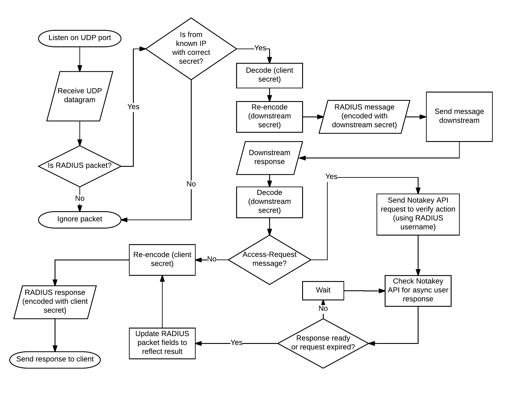

Introduction
Notakey Authentication Proxy (NtkP) is a proxy server that allows injecting Notakey-based 2-factor authentication in existing systems, which are using standard authentication protocols.
Currently, NtkP supports RADIUS with PAP and CHAP authentication types.
Technical Summary
NtkP manages a list of known IP addresses, which can send it requests. Each IP address has a corresponding secret. Each of these IP addresses correspond to one upstream client.
NtkP also has one backing RADIUS server address and secret defined. This is the downstream RADIUS server.
When a RADIUS message is received, it will be transparently proxied to the downstream server. Each incoming message will be decoded with the matching upstream secret, and re-encoded with the downstream server’s secret.
Each message returned by the downstream server will be similarly decoded and re-encoded, to match the secret expected by the upstream client.
In addition, if the RADIUS message is an Access-Request message, then
the username contained in the message will be passed to Notakey API, and
await verification. If the end-user denies this request on their smartphone, the response will be
changed, before being returned to the upstream client.
While waiting for the user to respond on their smartphone, upstream clients may time out, and re-send the Access-Request message. In this case, the proxy will attempt to handle duplicate requests, based on packet ID values and corresponding usernames.

System Requirements
Docker
The recommended environment for NtkP is Docker, so any Docker-enabled host should be fine.
Windows
NtkP can alternatively be installed as a Windows system service. It has a dependency on .NET Framework v4.5.
See: Microsoft .NET Framework v4.5 system requirements.
Installation instructions (Docker)
The recommended way to obtain NtkP is by using Docker. It is published as the
notakey/authproxy image. Use the tag latest to always use the latest version,
or specify a specific version, using the tag.
# Download the latest version
$ docker pull notakey/authproxy:latest
# Download a specific version
$ docker pull notakey/authproxy:1.0.0
The link to the Docker Hub page: Notakey Authentication Proxy on Docker Hub.
Installation instructions (MSI)
…
Configuration
Configuring the MSI
…
Configuring the Docker image
Parameters to the Docker image are set via environment variables.
<argument>https://demo.notakey.com/api/</argument>
<argument>65af8d56-b7d9-49b9-86c6-595dc440d933</argument>
<argument>/unattended</argument>
- The first argument should be a Notakey API endpoint (without the version number) with a trailing slash.
- The second argument should be a Notakey application access ID value. This value can be found in the Notakey dashboard, when viewing a specific application.
- The third argument should be left
/unattended.
Network Connectivity
The background service will attempt to connect to its specified Notakey endpoint.
If the endpoint URL uses https://, then port 443 will be used. Otherwise,
the port 80 will be used.
There are no expected inbound connections.
Log files
The credential provider does not perform any logging.
However, the background service will create log files in the package’s
NotakeyBGService folder.
winsw.err.log
This file will contain information about errors.
winsw.out.log
This file will contain informational output without errors.
Status Messages
The logon UI will provide a status message, which reflects the status of the background service.
The status will be re-checked every 10 seconds. Upon failure, the status check interval will become progressively larger (exponential backoff).
Service Status: OK
This message means that the background service is operational, and accessible, and that the specified API endpoint is valid and reachable.
Service Status: health-check request timed out. Is the background service running?
This message means that the background service is not running, or there is a permission problem, which blocks the logon UI from communicating with it, using named pipes.
Double-check if the service is started, and if its identity is not restricted from using named pipes.
Service Status: service can not connect to API. Check network connectivity and API parameters.
The background service is operational, but the API endpoint is not reachable.
Double-check network connectivity, firewall rules and the API endpoint URL.
Service Status: API call timed out.
The background service is operational, and the API endpoint was reachable at some point, but not anymore.
Double-check network connectivity, and if the Notakey server can be reached.
Service Status: error (<error message>)
This is a generic error message for unexpected issues.
FAQ
Does NtkP listen on only one port? Are accounting messages supported?
NtkP only listens to one port, and it expects authentication messages to be sent on this port.
Listening to accounting messages is not currently supported.
What are the implications for only supporting PAP and CHAP authentication modes?
PAP and CHAP do not sufficiently protect user credentials from man-in-the-middle attacks.
These authentication types may be deemed secure-enough for use on an internal network, where the risk for a MitM attack can be mitigated with other means.
Why does NtkP support only PAP and CHAP?
PAP and CHAP are good enough for many use cases, so we have prioritized other tasks over implementing more authentication methods.
Implementing more authentication methods is on our roadmap, however.